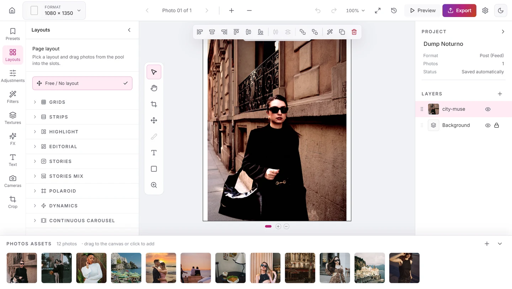

Cada clique encontra seu lugar.
Colagens, Polaroids e carrosséis contínuos. Monte a composição e troque o formato preservando suas fotos.
Do quadrado aos Storiescity girl diary
Para os momentos que não cabem em uma foto.
O look do seu feed começa no seu rolo de câmera. Junte os cliques, dê seu tom e faça deles uma história.
Hoje eu quero montar meu dump.
Um gostinho do studio
Escolha uma foto, encontre seu look e veja o seu dump ganhar personalidade. Tudo acontece aqui no seu navegador.
Mesma foto. Outra sensação.
Textura analógica, na medida.
Esta é uma amostra. No app você tem camadas, layouts, curvas, câmeras, FX e seus próprios presets.
Um rolo. Muitas composições.
Escolha um estilo e experimente os layouts reais do app. Grades, Polaroids, recortes inclinados ou um carrossel que continua na próxima foto.
Mesmas fotos. Infinitas formas de juntar.
Uma prévia dos layouts do studio. No app, você posiciona suas próprias fotos e edita cada camada.
O detalhe muda tudo
Deslize e sinta a diferença. Um tratamento de filme, a mesma luz e uma história com muito mais de você.
Seu novo ritual criativo
De um clique bonito a um carrossel inteiro. As ferramentas trabalham juntas para o resultado ter a sua cara.
Colagens, Polaroids e carrosséis contínuos. Monte a composição e troque o formato preservando suas fotos.
Do quadrado aos Stories44 filtros, simulações de câmera, texturas e ajustes finos. Editorial, filme, preto e branco ou pura experimentação.
O seu original continua intactoSeus ajustes, filtros e FX viram presets. Organize em pastas e leve seus looks em JSON.
Fotos, textos, bordas e efeitos. Ajuste um elemento de cada vez e desfaça quando quiser.
Edite no computador, com projetos locais e salvamento automático. Exporte suas páginas em JPG ou PNG.
Capturas reais do editor desktop. Seu espaço para ir além da demonstração.


My Dump Studio para Windows
Leve o studio para o seu computador. Sem prazo de expiração. Sem interromper suas ideias.
O download será ativado quando o instalador estiver disponível em uma release pública.
Não. O aplicativo trabalha localmente no seu computador. A demonstração desta página também funciona sem conta.
O instalador disponível é para Windows. Você pode experimentar esta página no celular, mas o editor completo é um aplicativo desktop.
As imagens de demonstração vêm de bancos com licença de reutilização. Os autores e as fontes estão na página de créditos. Créditos das fotos.
O botão de download consulta o último release público do GitHub e seleciona o instalador para Windows. Se a consulta estiver indisponível, você pode conferir os releases no GitHub.
Ver releases